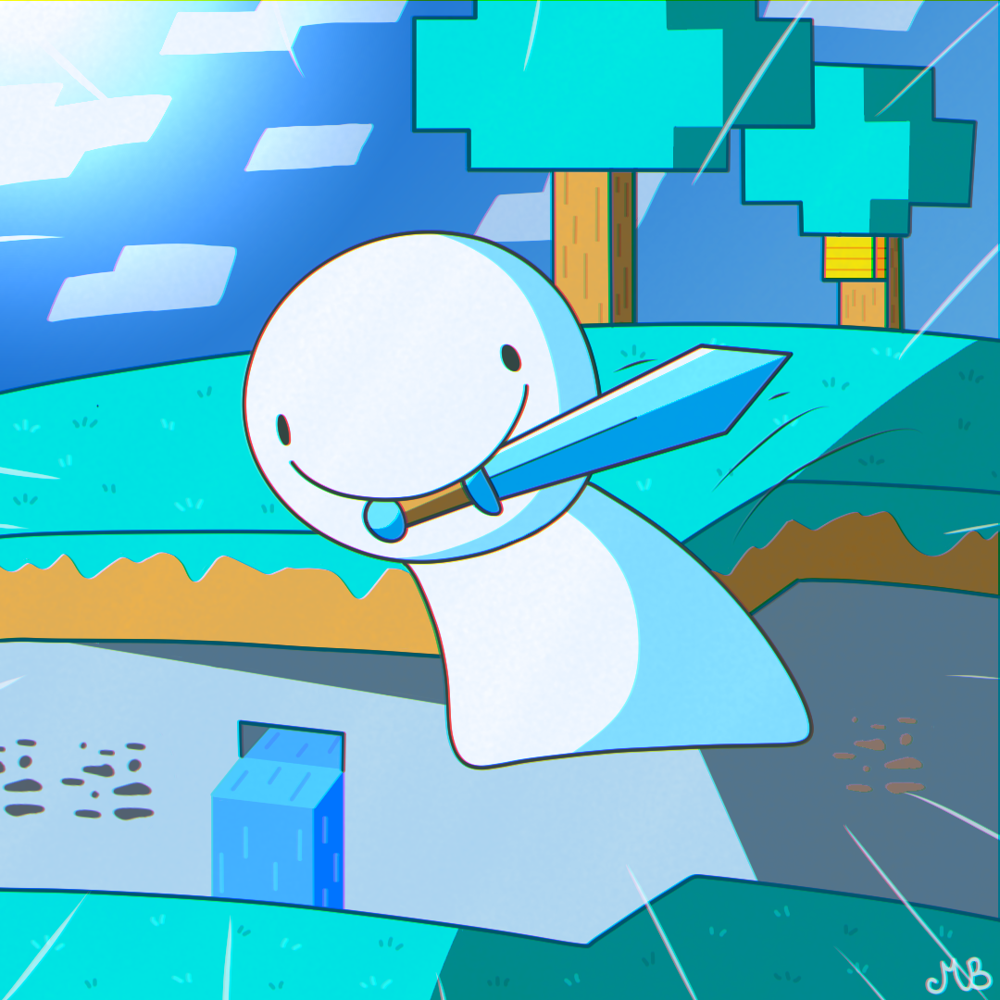

Choose your challenge of liking:

Choose your challenge of liking:
Minecraft Manhunt: Hunter
| Difficulty | Could be Worse |
| Rating |

|
| Type | Challenge |
Objective
Kill the Hunter.
Under no circumstance do you fail.
Rules
All's fair in love and war.
(Except Cheating.)
Git gud, player!
"Ohh Dream!!"
Welcome to a special two-parter, where I will be giving a guide on how to play Minecraft Manhunt, as a Hunter. Why not? It's a great way to destroy friendships forever!
Now, obviously I will be pulling out all the tricks that were showcased in Dream's Minecraft Manhunt series. I will also offer some alternatives to these methods, and because I am a very fair person, disclose which methods can be countered, because I am basically doing that for the Speedrunner's perspective as well.
Guide for Speedrunners: Part 2
(#NotADreamStanIPromise)
Contents
Minecraft Manhunt is a game created by Twitch Streamer and YouTuber Wilbur Soot, which was was later adapted and popularised by Twitch Streamer and YouTuber Dream, where he tries to defeat the Ender Dragon while a group of Hunters try to stop him. These Hunters are, in order of appearance, currently:
| 1st Hunter: | GeorgeNotFound |
| 2nd Hunter: | Sapnap |
| 3rd Hunter: | BadBoyHalo |
| 4th Hunter: | Antfrost |
| 5th Hunter: | Awesamdude |
Much of the tricks used will be grouped into different sections, being different points in time throughout the speedrunner's playthrough, where they will have different objectives.
In each section, the best times to attack, and the best methods to attack, will be talked about.
Speedrunner Objectives: Get as much distance as possible, and prepare.
The Speedrunner is currently very weak as they have no equipment. If there is more than 1 Hunter, it is a good idea for the group of Hunters to rush down the Speedrunner, smacking them with your bare fists until he is dead.
The Speedrunner will know that they do not have a fair fight, and thus will lose, thus will try to get away as far as possible. If you let them get away, the game will immediately become much harder.
You may worry about your Hunger running out, but so long as you do not attempt to boost using Trees, you should have more Hunger than the Speedrunner in the end.
However, if the Speedrunner boosts with trees, he may have time to collect equipment/weapons, and this plan will fall apart. Make sure to keep a balance between the two!
Can be countered by:
Unlike other structures such as Desert and Jungle Temples, Villages and Ruined Portals are usually more open than any other loot-containing structure. The Speedrunner might try to grab some loot as they pass by, if they run directly through it.
Hunters have 2 options here: To grab the loot/Iron Golem, or to split up, with one continue chasing, hoping the Speedrunner does not enter a Blacksmith's to get a weapon upon realising there are lesser Hunters chasing them.
A good practice is to only agree on splitting up after passing the Village; the Speedrunner will not be able to turn back to try to grab any loot to even the odds, as they would run into the Speedrunner still chasing them.
In the event of a Ruined Portal, the Speedrunner might try to get at the chests even if you are quite close; the chests are out in the open, after all. Stop them as quickly as possible, and leave a Hunter behind again, to collect the remainder of the loot left behind.
If the Speedrunner gets their hands on a Golden Sword, have the Hunter left behind craft Wooden Swords, or Stone Swords if they have time. Unless they acquire a Golden Sword with Sharpness, it is still possible to take out the Speedrunner. The Hunter(s) chasing should still continue to keep the pressure on, albeit from a further distance.
If they get Armour and/or an Iron Sword, you will have no choice but to back off, or risk getting killed. Retreat, and if you have beds from a Village, hide them nearby and set your spawn.
Can be countered by:
Speedrunner Objective: Find a lava pool, and using a Bucket, make a Nether Portal and get to the Nether.
Math dictates that a Hunter would need to craft one set of iron armour and tools, while the Speedrunner needs to craft that and a Bucket, for building a Nether Portal. This means that you, in theory, should finish gearing up before the Speedrunner, and might be able to rush them down before they have prepared sufficiently.
If the Speedrunner previously killed you, however, they might have more resources and be able to finish preparations quicker. Smelting time might also be an issue, so craft as many Furnaces as you can possibly afford, and possibly a Blast Furnace; just make sure the Speedrunner doesn't manage to steal iron from you!
If you are far away, crouch when you approach the area, and hope the Speedrunner doesn't notice you. Break the first rule of Minecraft and hope you don't fall into a Lava Pit, and simultaneously drop onto the Speedrunner in a circle around them, corner them and stab them to death. Simple.
While most Hunters opt to dig through walls, digging through the floor is much more efficient, breaking only 1 block instead of 3. Make sure to drop down in at least 2 locations (North, South, East or West of the Speedrunner) to corner the Speedrunner more easily, before they dig into the walls and get to the surface.
Can be countered by:
As seen from most of Dream's Manhunt videos, whenever the Hunters attempt to rush him down underground, he always manages to mine into the wall, relocate and/or get back to the surface. While being underground means there is a lack of space to move, this also means Dream can run away easily, as mining speed is the same for all characters, and the only way to get the Haste effect is through a Beacon.
This means that hiding in a 2-block deep hole while crouching on the Surface, is possibly a much better idea. For convenience however, it is a good idea to dig the hole only when you are sure the Speedrunner is coming up, and to then tower up by one block to reveal yourselves before ambushing the Speedrunner.
Sure, it may be easier for them to run, but at least they can't hide or do anything! Remember, the only way for them to progress is if they managed to delay you long enough, or if they managed to take out everyone!
There is one possible issue, however. There may be lava underground, which means the Speedrunner might just build a Portal there, instead of hunting for surface lava. In this case, the Speedrunner may be able to avoid the Hunters entirely.
The Speedrunner could also mine around to look for lava lakes. However, the Hunters can easily notice this if the Speedrunner starts moving underground in a single general direction, by looking at their name tag.
Can be countered by:
Have a couple hunters jeep the pressure on, while the rest mine for upgrades. If you are using this plan, you will probably give the Speedrunner sufficient time to complete all their tasks in the Nether.
That said, to a Speedrunner with Iron Armour, you will be basically unstoppable. Of course, if you somehow died and the Speedrunner got ahold of your equipment, you are basically screwed.
(Doesn't stop Dream from countering this plan though, he's too powerful to be kept alive; interpret that how you want, stans and haters)
Can be countered by:
Speedrunner Objective 1: Find a Nether Fortress for Blaze Rods
Speedrunner Objective 2: Trade Gold Ingots with Piglins for Ender Pearls
The Speedrunner is in the Nether, which is full of uneven terrain, Soul Sand and lava lakes. With the terrain working against them, it's the most treacherous part of the journey, and the best time to take them out
If you rush them down, there is a high chance to corner them at the edge of a lava ravine/lake, or a ravine/mountain, especially if they are distracted trading for Ender Pearls, or running through a Fortress looking for Blaze Spawners.
There, they will be forced to wall-climb/jump using blocks, and every step is a possibility for them to mess up and die in lava. You, on the other hand, just have to follow the path they created.
If they choose to tower however, they might be able to escape into the ceiling, which is a concern, as you cannot distinguish the Speedrunner's path in the Nether (there isn't a Cobblestone variant of Netherrack). Bring Bows and your own blocks, making sure not to get knocked off!
Can be countered by:
When trading with Piglins, there is a ~1.74% chance to get Iron Soul Speed Boots, and a ~1.09% chance to get the Enchantment Book. If you do get it, it may be a good method for chasing down the Speedrunner across the Soul Sand biomes; you will always eventually catch up (those boots be zooming).
It's a good method to use if you are planning to get Ender Pearls to trap the other side of the End Portal (but more on that later), and possibly ambushing the Speedrunner in the Nether, considering it might take a while to find a Nether Fortress.
Of course, this may force the Speedrunner to turn around and face you, and if you are alone, well, good luck getting those Boots back if you die.
Can be countered by:
The sole purpose of the Speedrunner going to a Nether Fortress, is to find Blaze Spawners to kill for Blaze Rods. That means, if you get to the fortress first, you can destroy all the spawners, kill the remaining Blazes, and toss all the Blaze Rods into the lava. (Or keep them if using to trap the other side of the End Portal)
this will force the Speedrunner to have to find a new Nether Fortress, giving you more time to take them out. Remember, if you are holding Blaze Rods and are about to get killed, it is better to burn in lava with your items, than to let the Speedrunner get ahold of your Blaze Rods
This is a good strategy to use if you are trying for the Enchanted Diamond Armour; you can leave one Hunter to get more time to prepare.
Can be countered by:
Speedrunner Objective: Return to the Nether Portal
If passing a Desert Temple, it may be worth it to drop down and get the TNT; setting up an explosive trap at the Nether Portal is a great way to blow up the Speedrunner; after all, they need a couple seconds to pass through the portal.
It might take a while to terraform the terrain and hide everything, however. To make it seem less obvious, have at least 1 hunter chase the Speedrunner, though perhaps at a distance, while 'waiting for the rest to catch up'.
Exploding Beds might also be useful, if you are a fan of Kamikaze.
Can be countered by:
When the Speedrunner appears on the other side of the Portal, Hunters can push them into lava; if they don't have a Water Bucket, they are very likely to burn to death. Even then, you can still do good damage in the time it takes for the Speedr to get away.
This works best if the Portal is placed in cramped locations, such as underground, or at the edge of a Lava Pool; however, tht doesn't mean it wouldn't work on the surface, where one side of the Portal is likely to be facing a Lava Pool (which is needed for the Portal, of course).
As per most traps, it's a good idea to have at least 1 hunter chase the Speedrunner, making the plan seem less obvious.
Can be countered by:
Building a base around the Nether Portal (in a manner similar to Bed Wars), with strong fortifications, could prevent the Speedrunner from getting to the Nether Portal, unless they attempt to do so and end up getting slaughtered.
However, this could easily force the Speedrunner to just build another Nether Portal to the Overworld; as there is no achievement that appears when the Speedrunner returns to the Overworld, the only way to tell is when the Compass pointing to the Speedrunner stops working.
Can be countered by:
This exploit is so overpowered it should probably be banned.
By placing blocks to surround the Nether Portal (preferably Obsidian) in the Overworld, the Speedrunner will be stuck and unable to exit the portal, nor return to the Nether. This means that if you leave 1 block open, you can attack the Speedrunner's knees without retaliation, and win.
The Speedrunner may want to agree on whether to use this method, with the Hunters, as it does seem pretty cheap.
Can be countered by:
If one Hunter sacrifices themselves to blow up the Portal, or mine an Obsidian Block to break the Portal, before dying to return to the Overworld, the Speedrunner will be forced to hunt around for more Obsidian Blocks, and possibly a Flint and Steel.
This is another good strategy to use if you are trying for the Enchanted Diamond Armour; you can leave one Hunter to get more time to prepare.
Alternatively, this can work if you plan to get to the Stronghold and trap the other side of the Ender Portal.
Can be countered by:
If you want, you can hide in the ceiling in areas around the Nether Portal, with a hole giving you a perfect view of it.
This allows you to spot the Speedrunner when they return to the Portal, upon which you have 4 seconds to fall down and surround the Speedrunner, knocking them out of the Portal before they have a chance to return to the Overworld, and blast them to bits.
Can be countered by:
Speedrunner Objective: Find the Stronghold
Back to the main plan: Just rush them down! This is the best thing to do if you trapped the other side of the Portal, or was defending the Portal, and are now trying to chase them down.
If the Speedrunner tries to use their Eyes of Ender to figure out the general location of the Portal, do your best to get the Eye of Ender. It is a good idea to have only 1 Hunter try to get the Eye of Ender, while the others cover them from the Speedrunner. The moment you can, destroy or toss away the Eye, in case you die.
Stick close, and prevent further Eyes of Ender from being thrown.
Can be countered by:
Did you know that Potions of Harming ignore Armour? This means that, using Harming I and Harming II Potions, 6 and 12 points of damage can be dealth to the Speedrunner respectively.
Splash Potions of Poison can also eventually drop the Speedrunner to 1 Health; which would make them extremely fragile, as they might 'Hit the Ground Too Hard' and die. The poison damage also slows them down a bit whenever they take damage, which will work in your favour to take out the Speedrunner.
Can be countered by:
Speedrunner Objective: Activate the End Portal
Seeing as the Speedrunner's objective is to get to the End, you can barricade yourselves in to prevent them from getting to the Portal.
However, there is an issue with this; the Speedrunner will be able to prepare themselves, and will most likely succeed or die trying.
Can be countered by:
Alternatively, to prevent the Speedrunner from getting anymore powerful, block up the End Portal as fast as you can, then give chase! Usually, the Speedrunner will assume you to be just defending the room, and thus will not expect it.
However, be careful that the speedrunner might end up back in the Portal Room, and manage to activate the End Portal before you can stop them. Whenever you lose sight of the Speedrunner, and realise they are moving in the Portal's direction, get back to the Portal Room as soon as you can; it is simply not worth it to continue the chase.
Can be countered by:
If you manage to get your hands on Blaze Rods and Ender Pearls, you can set off for the Stronghold to activate the Portal first, before the Speedrunner. This gives you an opportunity to trap the spawn area, and thus finish off the Speedrunner when he enters.
This can include leaving only room to attack the Speedrunner's knees, while ensuring he can't hit you, or to flood the area with Lava.
However, this does give the Speedrunner time to prepare. Be on your guard!
Can be countered by:
As Sun Tzu once said, "Withers go brrrr – also subscribe to Technoblade", the Hunters can sarcifice themselves in a big fiery explosion to blow up the Speedrunner and everyone in a 10-block radius.
Alternatively, they can activate the End Portal themselves, and push the Wither in with a piston, before it finishes spawning and explodes. That's a problem for the Speedrunner to deal with. If underground, the Speedrunner can't hide, and if on a floating platform, the Speedrunner will fall.
Alternate alternatively, they can summon the Wither and escape to the other side of the portal, setting up a trap for the Speedrunner (as per Plan B).
Can be countered by:
Speedrunner Objective: Defeat the Ender Dragon
If you have the neccessary materials, it is possible to craft new End Crystals that can heal the Ender dragon! If you place them and cover them with Obsidian/End Stone, the Speedrunner will have a much harder time taking down the Ender Dragon.
Make sure to build the defence first, as the Speedrunner might destroy you and it while you are trying to do so. They will be forced to attack your fortified position, which is also protected by the Ender Dragon (assuming it was placed on the Central Platform).
That will give you more time to take out the Speedrunner!
Can be countered by:
Alternatively, you can climb up an Obsidian Pillar and protect an already existing End Crystal. Just make sure the Speedrunner doesn't notice and destroy the Crystal before you even get to it. this can be done if you climb from the side of the Pillar facing the Void.
The Speedrunner will have no choice but to attack from close range, which may allow you to blow them up together with everyone else.
It s a good idea to pick a taller tower so that the Speedrunner will have a harder time getting up to the top. Note however that this might be a bit dangerous, as Fall Damage might be fatal.
Can be countered by:
By placing 4 End Crystals on the central platform, it is possible to respawn the Ender Dragon, even as it is being killed.
In a very technical sense, that would mean that the Ender Dragon was not killed, and the Speedrunner will have to beat the Ender Dragon once more, with all the End Crystals again.
If the Speedrunner doesn't argue, you get another opportunity to take out the Speedrunner!
Can be countered by:
Though the Outer End Islands are really far away, Flying Machines can get you the Speedrunner there easily, which would mean you may have to give chase, as the Overpowered Weapons found there are no match for anything you will have found throughout the whole game.
This means, if the Speedrunner chooses to travel to the Outer End Islands, you will have little choice but to follow using your own Flying Machine from as high a position as possible; the Elytra is too powerful.
However, there is a chance that the Speedrunner will trick you if everyone, or almost everyone decides to give chase. Ender Pearls can get the Speedrunner back to the Main Island; if you aren't carrying any, you will have to fall into the Void and die and lose everything in order to get back, which is a huge disadvantage.
Alternatively, you could shoot the Speedrunner down as they are travelling, so long as you don't get shot down yourself.
Can be countered by:
Continuing off our theme of Kamikaze, running at the Speedrunner with a Bed can easily blow them up, especially when they are trying to take out the Ender Dragon and are in the central platform, or if they are attempting to climb an Obsidian Tower.
This could easily backfire, however, if the Ender Dragon is at low health and gets (somehow) blown up before the Speedrunner did, which can be seen from the text messages informing you of that.
In this gamemode, the Assassin(s) can take out the Speedrunner in 1 hit, but the Assasin(s) cannot move while the Speedrunner looks at them.
That means the Assassin will need to hide/sneak up on the Speedrunner, in order to take out the Speedrunner.
In this gamemode, a Noob will try to get themselves killed in a set amount of time, optionally using a specific method, while the Saviour(s) will need to prevent them from doing so.
The Saviour(s) will be given items they can use to prevent the Noob from achieving this goal, as well as Creative Mode.
A good tactic is to trap the Noob to prevent them from being able to do anything.
In this gamemode, the Speedrunner will try to defeat the Wither instead of the Ender Dragon, while the Hunters try to hunt them down.
This may be more time-consuming, given the rarity of Wither Skeleton Skulls. Make use of that chance, and kill every Wither Skeleton you see! Then burn the Skulls in Lava should they drop.
The Wither fight will also require a lot more concentration, which could allow the Hunters to simply snipe the Speedrunner from a distance in order to win, unless underground, in which case they can easily be cornered.
Disclaimer: Only the latest version of Minecraft Manhunt will be shown, to prevent the Gallery from being clogged up. You know where to find his videos, anyways.
Previous | Index | Next |
Hollow Knight |


 Dream's latest Manhunt, with 5 Hunters
Dream's latest Manhunt, with 5 Hunters